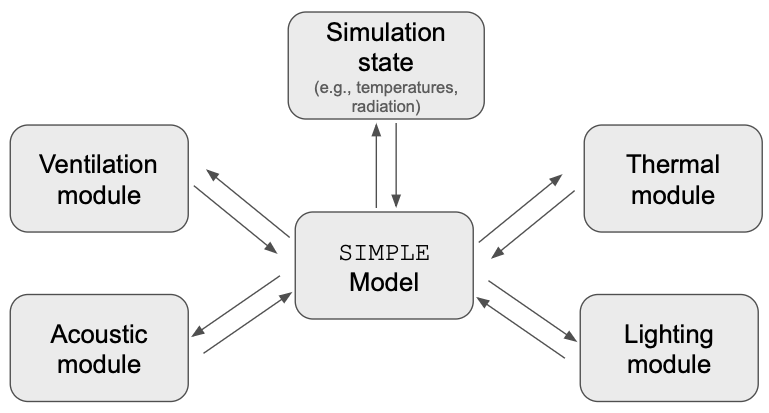

What is SIMPLE?
I think SIMPLE can be seen from two perspectives. One of them is historical, and refers
to the motivations and drivers that determined its design and motivated me to develop it. And the other one is
pragmatic, refering to those cool features and benefits of SIMPLE that I have been finding during it's
development. (Arguibly, these pragmatic benefits might be present in any modern simulation tool... but considering
the low number of these, I guess they are pretty unique to SIMPLE anyway.)
SIMPLE's historical origins: It's the people, stupid
The development of SIMPLE was motivated by the results of my PhD Research.
In these studies, I investigated what is it that people—not building scientists
or architects or engineers—mean by and expect from a comfortable home. My finidings
revealed to me how imbalanced our knowledge is, and how this disparity will continue to grow in the future
if we do not dedicate more time to humans. Let me put it as follows:
- Materials have been/will be getting better: e.g., Whether a window is open or closed makes a big different to the building's performance, and the health and comfort of the people in it.
- Software have been/will be getting better: e.g., We can predict and understand the effects of an open/closed window better than ever before
- Our understanding of people is not catching up: e.g., do we really know whether the window open or closed?
PLEASE Note: Point 3 is not meant to say that nothing has been done about understanding people. However, I would argue that our current tools to study people are not the best. This should be more clear later in this section.
This is a problem because buildings are built for people. Therefore, not understanding people implies not understanding the performance of buildings. Understanding when and why people choose to open windows requires tools that will let us properly research and evaluate human comfort and behaviour.
Below are the three main elements of SIMPLE that make it better at simulating buildings
for real people.
1. It was designed to allow for holistic simulations
The motivation for performing holistic simulations is kind of obvious: when people get into a room, they just feel it. In other words, people do not separate—as software and building scientists do—the Thermal from the Daylight from the Acoustic domains. This means that, if we want to trully incorporate people's behaviour and comfort into our simulations, we need to account for multiple domains at the same time, at run time.
At run time means that it is not enough to run three simulations (one for thermal, one for acoustic, one for lighting) without considering the interaction between these domains.
SIMPLE was designed to allow for this. In order to achieve this, we developed an architecture where different modules would connect to a single—domain agnostic—api. This API is the SIMPLE Model, and it allows any developer to say "Hey, give me the temperature of this room" without knowing how this value was calculated. In a similar manner, it allows these developers to make available values for other modules to use.

2. It was designed to give some room for people's lives
People are not simple. They do not just say "it is cold, I will turn the heater on" in a deterministic manner. They take into account things like budget, bills, whether they are alone, and whether they have kids. Modelling this kind of behaviour calls for a much more flexible way of modelling control algorithms (yes, I am treating human behaviour as a control algorithm).
This is actually addressed in the same way as point 1 (i.e., Holistic simulations), in the sense that a new module could be created to deal with "Budget" or "Safety" and then use the same API to read and write values.
3. It was designed to travel in time
SIMPLE was designed with the purpose of acknowledging that people are constantly aware of their future.
This is kind of obvious (e.g., you put a jacket before going out, not after) but our simulation tools tend
not to do this at all. This is also not trivial to implement, as it means that people—every time they need to decide what to do—consider the near future that is comming.
From a simulation perspective, this implies
- gathering a bunch of potential actions to take
- mentally implementing that change and simulating some time into the future
- identify the best decision to take, if any.

The way SIMPLE deal with this is by separating the Simulation State (i.e., the values that are part of state of the simulation and NOT temporary) from the model. From a software perspective, the structure representing the model is immutable, and thererfore the simulation process implies changing a mutable element we call the state.
This makes it much easier and computationally cheaper to, during a simulation, copy, simulate, and decide which is the best option to take.
Beyond people
First, it is important to acknowledge the benefits of the features outlined above, even if you do not agree with my views on comfort:
- Holistic simulations lets us optimize multi-domain control algorithms that might lead to more optimal performance of buildings.
- Traveling in time allows us to implement Model Predictive Control, at runtime, in production, as part of a real EMS system.
But there are also other benefits.
It allows for more complex control algorithms
SIMPLE allows writing control algorithms as scripts. This allows for a much richer and flexible way of writing algoritghms than through schedules. or other common methodss.
let kids_bedroom = space("Kids Bedroom");
let kids_heater = hvac("Kids heater");
let temperature = kids_bedroom.dry_bulb_temperature;
if temperature < 18 {
kids_heater.power_consumption = 1000
} else if temperature > 23 {
if rand() > 0.82 {
kids_heater.power_consumption = 0
} else {
print("Oh oh! I forgot to turn the heater off!")
}
}
Programs no longer just run on your PC
SIMPLE is a modern tool, written in a modern language, and that can run in
multiple environments.
It can be easily compiled for Windows, Mac and Linux for running locally in your computer. It can also be compiled into Web Assembly, which means that it can run on a browser without the need for servers. It can also be deployed in very small and secure containers for running at scale on the cloud. It can probably (I have not tested this) be compiled into a small computer and be implemented as an Energy Management System in an actual building, providing insights on what the best strategy is.